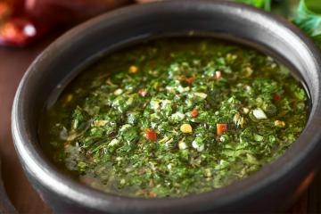

Chimichurri
Ingredients
- 1 teaspoon of coarse salt
- 1 cup of water
- 2 tablespoons of fine chopped garlic
- 1 teaspoon of dry pepperoni pepper
- 1 teaspoon of dry oregano
- 2 bay leaves
- 1/2 cup of chopped parsley
- 1 tablespoon of white wine vinegar
- 2 tablespoons of olive oil
How to prepare
- Boil the water let the salt dissolve.
- Wait it to cool for a bit and add the garlic, the pepper and the dry herbs. Mix it up well.
- When it gets to room temperature, add the parsley, the vinegar and the olive oil. Mix it up and serve.
